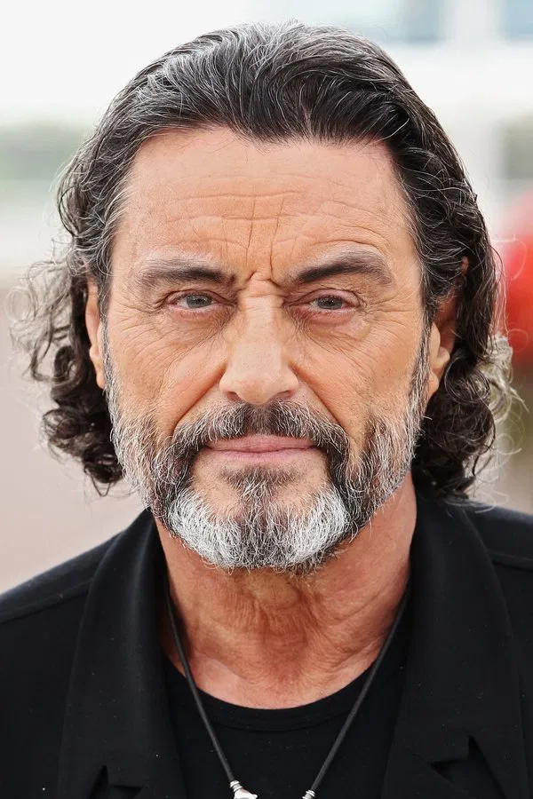

Sinopse
John Wick é um lendário assassino de aluguel aposentado, lidando com o luto após perder o grande amor de sua vida. Quando um gângster invade sua casa, mata seu cachorro e rouba seu carro, ele é forçado a voltar à ativa e inicia sua vingança.

Elenco
Keanu Reeves
John Wick

Ian McShane
Winston
Alfie Allen
Iosef Tarasov
Personagens
John Wick, um lendário assassino aposentado, retorna à ação para se vingar daqueles que destruíram sua vida após a morte da esposa.
Viggo é um poderoso chefe da máfia russa, pai de Iosef, e tenta proteger o filho da fúria de John Wick.
Trilha Sonora
-
Think – Kaleida

-
Story of Wick – Tyler Bates & Joel J. Richard
-
Shots Fired – Tyler Bates & Joel J. Richard
-
In My Mind – M83 (remix)
-
Who You Talkin' to Man – Ciscandra Nostalghia
Imagens do filme
Curiosidades
O ator treinou intensamente artes marciais e tiro com armas reais para interpretar Wick com realismo.
O filhote Daisy simboliza o último presente da esposa de John e serve como o principal gatilho emocional da história.